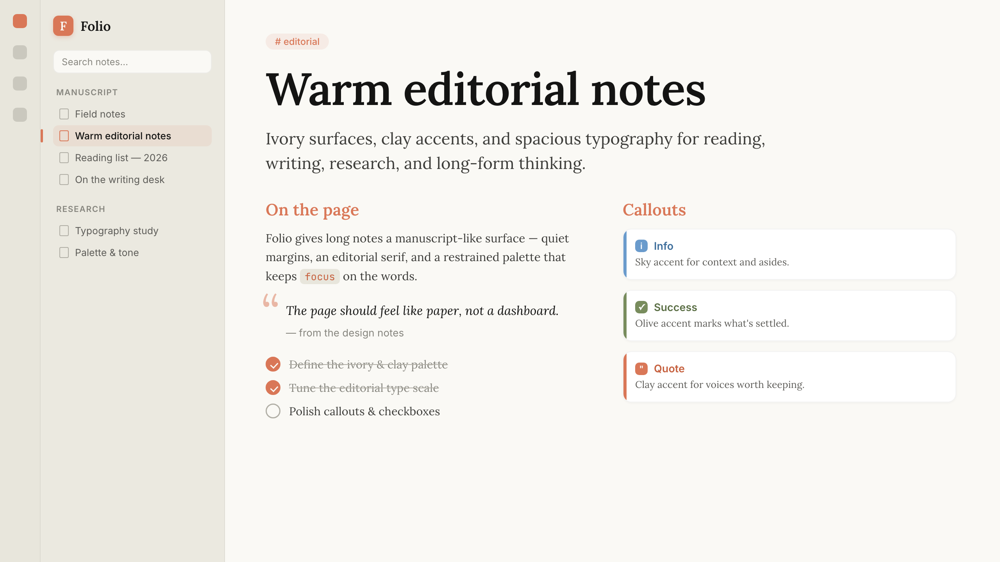
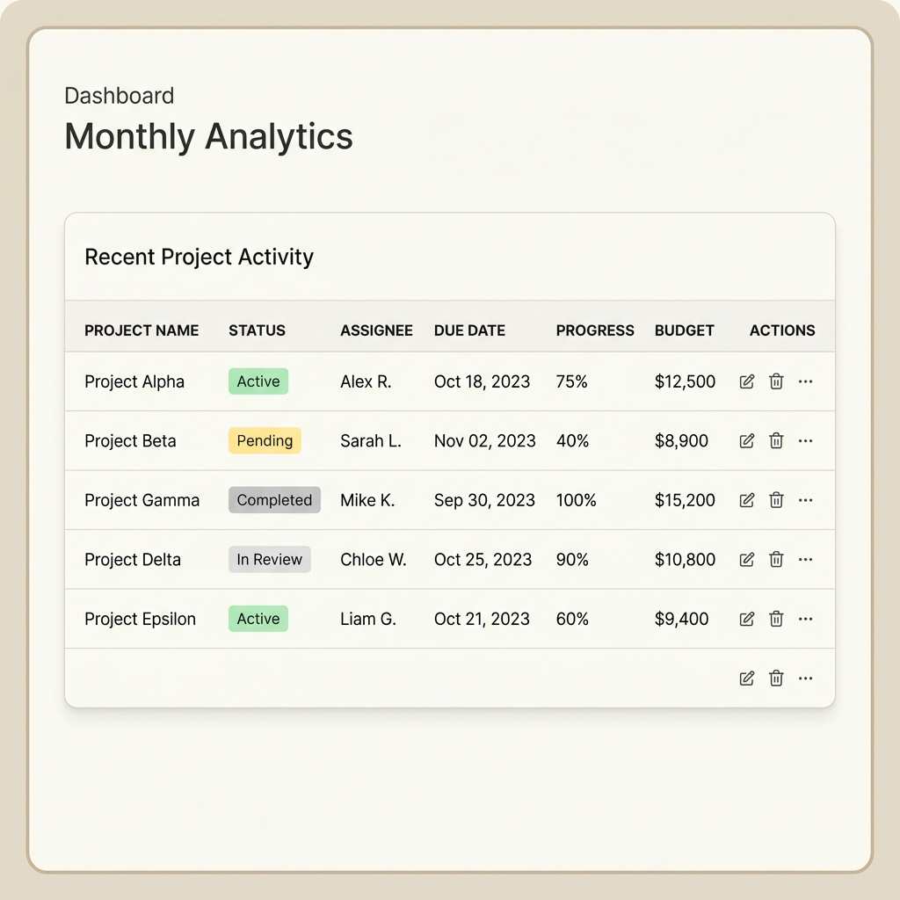
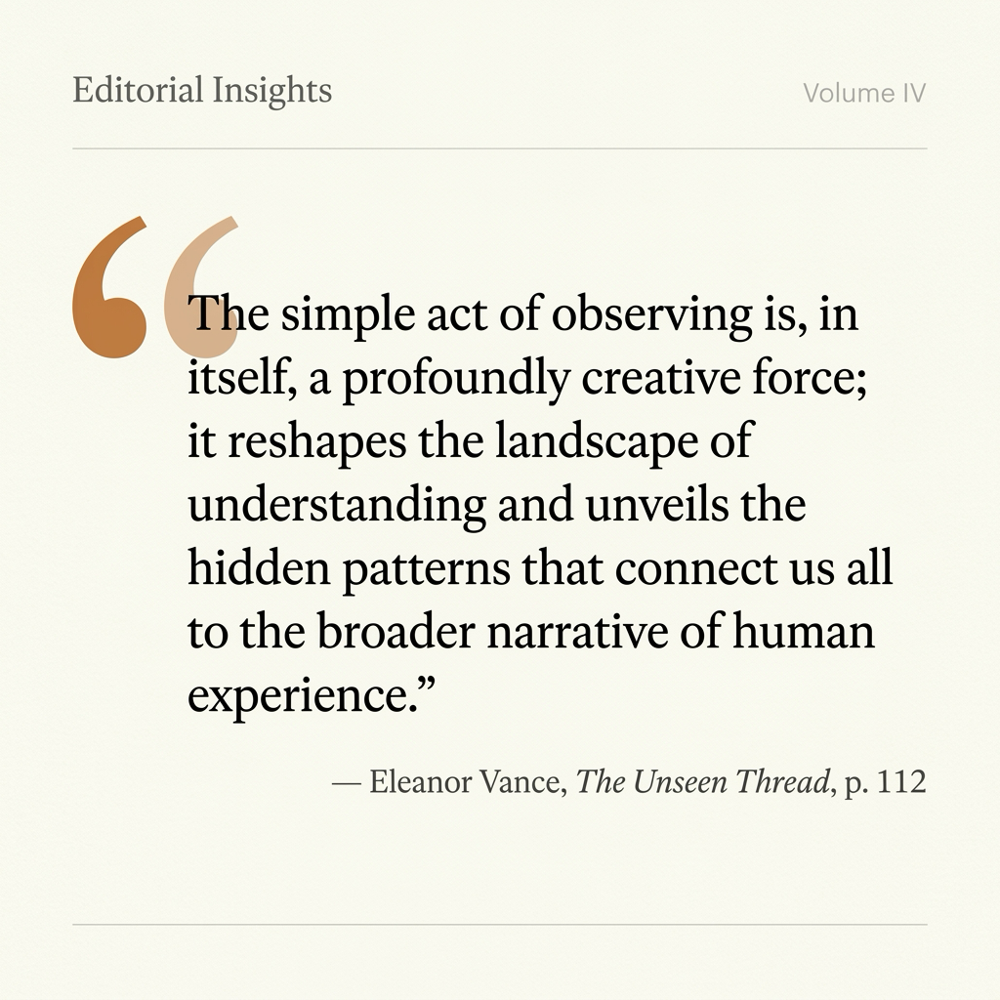

Editorial typography
Serif-forward reading views, restrained headings, and spacious line rhythm for essays, research logs, meeting notes, and long documents.

Obsidian community theme
A warmer workspace for notes that deserve to be read again. Folio turns daily writing, research, and long-form thinking into a calm editorial surface.
Why Folio
Folio keeps Obsidian powerful, but gives the interface a quieter rhythm: ivory writing surfaces, clay active states, readable spacing, and typography tuned for mixed English and Chinese notes.
Daily writing coverage
Serif-forward reading views, restrained headings, and spacious line rhythm for essays, research logs, meeting notes, and long documents.
Clear palettes for info, warning, error, success, tip, question, quote, summary, abstract, and example states without turning the page into a rainbow.
Navigation, tabs, search, command palette, menus, sliders, properties, embeds, and Canvas nodes all share the same calm visual system.
Warm syntax colors, borderless editorial tables, refined blockquotes, clay tags, filled checkboxes, and print-friendly output.
Showcase
Folio focuses on the parts of Obsidian that shape the writing day: callouts, tables, quotes, code, tags, metadata, and the surrounding navigation.


Palette
Folio uses a compact color system so active states remain visible without overwhelming the page. The result feels editorial instead of ornamental.
Install
Open Obsidian, go to Settings -> Appearance -> Themes -> Manage, search for Folio, then install and enable it.
Compatible with Obsidian 1.5.0+ on desktop and mobile.
Open Settings and choose Appearance.
Open Manage under Themes.
Search Folio and select Install and use.